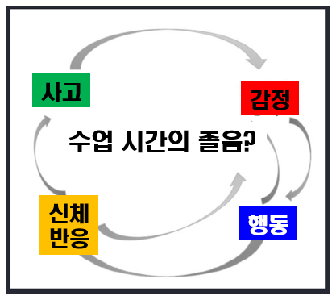

학생이 수업 시간 중에 책상에 엎드려 잠을 자는 경우에는 여러 가지 원인이 있다.
학생이 어떤 원인으로 잠을 자야 하는지 정확하게 파악해야 적절한 지도를 찾을 수 있다. 잠을 자는 근본적인 원인을 파악하지 않고 책상에 엎드려 잠을 자는 학생을 깨우거나 처벌만 한다면 효과가 별로 없다. 수업 시간에 대놓고 잠을 자는 것은 명백한 학생들의 잘못이다. 그런 행동은 수업하는 교사를 완전히 무시하는 행동이다.

우선 수업 시간 중에 책상에 엎드려 잠자는 학생에 대한 정보 수집이 중요하다.
가정문제로 학습동기가 결여됐거나 우울증으로 심리적 문제가 있다면 적절한 조치가 필요하다. 수업 시간에 자는 것이 잘못되고 예의가 아니라는 것을 알지만 파도처럼 밀려오는 졸음을 이기기에는 역부족이다.
그렇지만 개인의 건강 문제, 핸드폰이나 컴퓨터의 게임, 운동, 학원, 아르바이트로 인한 신체적 피로가 누적되어 학생으로써 수업에 집중하지 못하고 책상에 엎드려 자는 것이라면 체계적인 일상생활의 올바른 습관 및 학습계획을 수립하거나 학습동기를 유발하도록 탄력적으로 조율해야 할 것이다.
수업시간에 엎드려 잠을 자는 원인
1) 학습능력 부족, 학습의욕 상실이 일차적인 원인
2) 불규칙한 생활습관으로 인한 피곤함, 밤샘 알바나 밤새게임을 하는등 수면시간 부족
3) 가정에서부터 고립심리나 반항심리 등의 작용
4) 청소년기 사춘기를 무기력감이나 우울감으로 나타나는 현상
5) 청소년기 신체 성장통의 가능성
수업시간에 책상에 엎드려 잠을 자는 이유
1) 구체성(Concreteness)
교사가 수업시간에 다루는 교과서의 개념이 추상적이어서 너무 막연하여 매우 지루하여 졸음을 느낀다. 학생들은 추상적이고 막연한 수업내용은 기억하기 어렵고 머릿속에 오래 저장하기 힘들다. 교사는 추상적이고 모호한 수업 내용을 학생들의 수준에 알맞도록 이해하기 쉬운 내용으로 안내하고, 비유해서 구체적으로 전달해야 한다.
2) 의외성(Unexpectedness)
수업은 학생들도 예측 가능하면서 최신 정보의 다양성을 추구해야 한다. 교과서에 있는 개념, 교과서에 있는 예제, 교과서에 있는 사진만 제시한 경우 학생들에게 지루할 수 밖에 없다. 일상적인 내용의 반복적인 사항은 호기심도 사라지고 수업시간이지루해지고 고통스러질 것이다. 매일 쏟아지는 새로운 정보의 무궁무진한 다양성을 제시하지 못하고 체계적으로 활용하지 못하는 교사의 너무나 뻔한 이야기는 학생들에게 수면을 재촉하는 자장가이다.
3) 단순성(Simplicity)
교사는 수업 시간 동안 너무나 많은 지식을 전달하고 그에 대한 효과를 얻고자 한다. 교사 자신이 학생들에게 전달하고자 하는 욕구와 학생들의 받아들일 수준정도 및 상황이 고려되어야 한다. 교사는 수업할 때 최대한 자신의 욕구만큼 많이 준비하여 최대한 다양하게 설명하지만 학생들은 너무나 길고 지루하게 느껴지기 때문이다. 이러한 너무 많은 내용이 쏟아지면 복잡하여 정리하기도 전에 결국 지쳐 잠을 자게 된다.
4) 스토리(Story)
교사가 교과서에 있는 내용을 그대로 전달하여 시험점수에 향상시키고자 한다. 시험문제에 출제하기 좋은 내용만 알려줄 경우 학생들은 자기 스스로 책을 독학하는 것과 차이를 못 느낀다. 따라서 수업의 필요성을 못 느끼고 듣기 싫기 때문에 그냥 책상에 엎드려 잠을 자게 된다. 교사는 자신이 소중하게 여기는 것을 학생들이 수업 시간에 배워야 할 교훈이 무엇인지도 함께 전달해야 한다. .
5) 감성(Emotion)
학생들의 행동을 변화시키려면 계획적이고 체계적인 동기 유발이 중요하다. 이러한 동기는 내재된 사고, 감정, 행동, 신체 반응은 서로 연결되어 상호작용을 한다. 내재된 사고와 감정은 통제가 가능하지만 신체 반응은 행동으로 반응하기 때문에 통제가 어렵다. 수업 시간에 졸지 말고, 엎드려 잠을 자지 않아야 하는 행동이 명백한 잘못이라는 것을 안다. 그렇지만 수업 시간에 나타나는 신체 반응은 학생이 통제할 수가 없다. 수업내용 (사고)에서 따분함을 느낀(감정)고 하품을 하거나 딴짓(행동), 눈꺼플이 내려가고 졸음이 몰려온다 (신체반응). 따라서 교사가 수업 시간에 학생의 사고, 감정, 행동을 바꿀 수 있도록 자극하지 못하고, 졸지 말라고 야단을 치는 것은 무의미하다.
6) 신뢰성(Credibility)
오늘날 지식정보의 홍수시대이다. 교사가 수업내용과 수업 방법에 대한 신도있게 전문적인 지식을 추구해야한다. 학생들에게 어려운 내용일지라도 쉬운 비유와 매력있는 사진, 동영상 등으로 생동감 있게 전달할 수 있는 실력있는 교사를 신뢰한다. 궁금한 것을 질문한 경우에 답변해 줄 수 있는 교사를 좋아한다. 하지만 교실에서 수업은 시험점수에 관한 것을 중심으로 수동적 지도 태도에 학생들은 교사의 전문성을 의심하면서 지루함과 동시에 자기중심적 생각을 취하게 된다.
이와 같이 자장가를 들려주는 교사가 아닌 흥미로운 이야기를 들려주는 교사가 필요하다. 수업 시간에 학생들이 잠을 자는 이유는 다양하다. 교사의 지식을 전달하려는 단순함보다 그 내용의 의외성, 구체성, 감성이 있는 이야기로 체계적으로 준비해야 한다. 이러한 수업에서는 교사와 학생의 상호작용이 자연스럽게 이루어져 수업 시간이 즐거워 진다. 그렇지만 지속적으로 책상에 엎드려 잠을 자는 학생은 근원적인 원인과 이유를 찾아야 한다. 심각한 상태일 경우 전문가의 도움을 받을 수 있어야 학생, 교사 모두에게 효과적이 될 것이다.